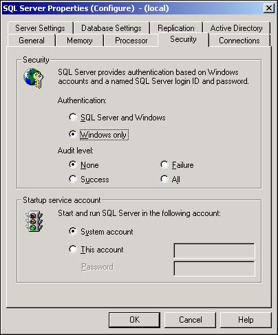

11.3 Establish a Windows NT/2000 Authentication Mode
SQL Server is a much more complex database engine than desktop systems such as Jet. SQL Server is a true server engine; it provides access to multiple databases or even hundreds of users simultaneously. Furthermore, unlike Jet, which is tightly bound into Microsoft Access, SQL Server exists as a separate entity on a computer, which most often is located across a network from the user's desktop computer.
A building that contains multiple offices is a good analogy for the way that SQL Server is built. The building is secured, and each office within the building is locked. Carrying the analogy further, each office contains locked desk drawers and filing cabinets. A person who wants to use information in one of those file cabinets must enter the building, gain entrance to a locked office, and have a key or other permission to open a locked file cabinet.
SQL Server requires each user to be authenticated before it permits the user to open a database. Authentication is somewhat like having to show an employee ID card to a guard at the front door of a building. Without proper credentials, you don't get into the building. Similarly, you don't get "into" SQL Server unless you have been properly authenticated.
SQL Server supports two different authentication modes:
Windows NT/2000 authentication. This mode means that SQL Server explicitly trusts Windows to authenticate the user. Anyone who has a valid Windows user ID and password is allowed to access SQL Server. This is known as a trusted connection because SQL Server trusts Windows to allow only qualified people into the computer system and onto SQL Server. Windows NT/2000 Authentication works only with Windows NT or Windows 2000, and it has the distinct advantage of being quite simple to administer. Furthermore, the Windows NT/2000 security provides for expiration and other controls over password usage. In fact, SQL Server even recognizes the user's membership in Windows security groups.
SQL Server and Windows NT/2000 authentication. Using this mode means that both SQL Server and Windows are involved in authenticating the user. The user is not able to access SQL Server unless both Windows and SQL Server are able to verify the user's identity and password. SQL Server and Windows NT/2000 Authentication mode is often referred to as mixed-mode authentication.
The selected authentication mode simply directs SQL Server where to look for the user's credentials. In other words, authentication is performed by SQL Server, and describes how SQL Server verifies the user's identity.
You've decided that mixed-mode authentication is too much work, and users are likely to forget either their Windows password or their SQL Server password. In fact, some users have resorted to writing down their passwords on sticky notes attached to their computer monitors. Obviously, this creates a security risk. You'd like to make it as easy as possible for users to get into SQL Server so that they can use the databases you've created for them.
Technique
Enterprise Manager includes all the dialog boxes that are required to set SQL Server's authentication mode. Changing the authentication mode takes only a few moments, and it affects all databases that SQL Server manages.
Steps
SQL Server takes a layered approach to securing the data in its tables. These layers include authentication-whereby a user is identified by username and password-and permissions on the objects (such as tables and views) stored in the database.
As a developer or SQL Server administrator, you must choose which authentication mode your users use to access SQL Server.
In Windows NT/2000 authentication mode, any user who is able to log in to Windows is able to access SQL Server.Windows NT/2000 Authentication mode is the easiest possible way for users to access SQL Server. As long as a user is an authorized user of Windows NT or Windows 2000, he'll be able to get into SQL Server. No extra password or user identity is required for admittance to SQL Server, which reduces the risk that a user will store a password in an insecure place.
Choose Start, Programs, Microsoft SQL Server, Enterprise Manager to open Enterprise Manager.
Open the SQL Server group and right-click on the server you want to configure.
Select Properties from the context menu that appears. (The Properties command should be highlighted in the context menu.)
Select the Security tab.
Select Windows Only from the authentication options near the top of the Security tab, as shown in Figure 11.8.

Click the OK button to complete the process and close the Properties dialog box.
Comments
Windows NT/2000 authentication simply means that SQL Server trusts Windows to authenticate users. Windows determines the user's identity and group member as the user logs into his computer. From that point on, the user has full access to SQL Server installations that are configured to accept Windows NT/2000 authentication.
The main problem with Windows NT/2000 authentication mode is that it doesn't work with Windows 95, Windows 98, or non-Windows computers. Anyone who is connected to your network from a Unix or Apple Macintosh computer will not be able to use Windows NT/2000 authentication. You'll have to set up mixed-mode authentication for these users.
Another problem with Windows NT/2000 authentication is that in many environments, more than one person shares the same computer. For instance, consider a point-of-sale terminal in a retail environment or an industrial computer located on a factory floor. Multiple users typically access these computers, and because SQL Server admits anyone logged into the computer, SQL Server can't distinguish between individual users. This can be a problem in environments where some users must be prevented from viewing certain tables or accessing certain data within a database.
Note
 |
Although this discussion makes it sound as though SQL Server is passive when working under Windows NT/2000 authentication mode, there is more to the story than discussed here. SQL Sever actually calls Windows NT or 2000 to retrieve the user's Windows login identity and group membership. If the user's group membership changes while he is logged into Windows, SQL Server sees the changes as soon as the user tries to access SQL Server.
|